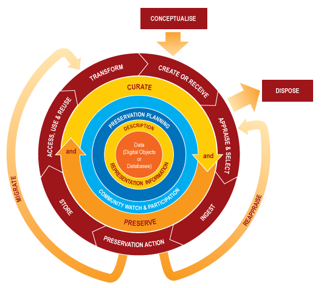

Otvoreni pristup
istraživačkim podacima
Alen Vodopijevec [alen@irb.hr] / Institut Ruđer Bošković, Zagreb
Podaci?
Kvantitativni podaci

Kvalitativni podaci

Informacije

Razumijevanje tih podataka i informacija jedan je od elemenata koji tvore ZNANJE
Knowledge-Reid-Highsmith" by Artist is Robert Lewis Reid (1862–1929). Photographed 2007 by Carol Highsmith (1946–), who explicitly placed the photograph in the public domain. - Library of Congress, Prints & Photographs Division, LC-DIG-highsm-02214 (original digital file), uncompressed archival TIFF version (108 MB), cropped and converted to JPEG with the GIMP 2.2.13, image quality 88.. Licensed under Public domain via Wikimedia Commons{kind=link}
Plan za danas:
- općenito o podacima
- planiranje upravljanja istraživačkim podacima
- organizacija i dokumentiranje podataka
- pohrana i sigurnost
- intelektualno vlasništvo i etička pitanja
- dijeljenje podataka i pravo na pristup
kad govorimo o izvornim istraživačkim podacima podrazumijevamo neki od digitalnih formata.
Digitalno i digitalizirano
[born digital]
Izvorni istraživački podaci
- prikupljaju se
- opažaju i
- kreiraju*
s ciljem kasnije znanstvene analize
* npr. simulacije
Analiza
- Primarni i
- sekundarni podaci
Razlika?
Analiza podataka
- primarni podaci
- prikupljeni od strane osobe ili osoba koje rade i analizu
- sekundarni podaci
- podaci koje je prikupio/generirao netko drugi, a ne znanstvenik koji vrši analizu
- izazovi
- usklađenost podataka s konkretnim ciljem i svrhom analize
- ulaganje vremena u organiziranje i proučavanje dokumentacije 'preuzetog' seta podataka
Niz različitih podjela
Podaci mogu biti:
- tekstualni / numerički / multimedijalni
- modeli / softver
- disciplinarno specifični
- karakteristični za određeni instrument
Životni ciklus podataka
- Generiranje podataka - osmišljavanje istraživanja, plana upravljanja istraživačkim podacima, obrasci pristanka na dijeljenje, identifikacija postojećih dostupnih podataka, prikupljanje (eksperiment, opažanje, mejerenje, simulacija),
- Procesiranje podataka
- Analiza podataka
- Prezervacija podataka - pohrana i sigurnose kopije, arhiviranje, opisivanje metapodacima, migracija u formate prikladne za dugotrajno očuvanje
- Pristup podacima - dijeljenje podataka, kontrola pristupa
- Ponovno korištenje podataka - validacija rezultata, sekundarne analize (nastavak followup ili nova istraživanja), obrazovanje (korištenje u nastavi)
Životni ciklus podataka (DCC)

Plan upravljanja
istraživačkim podacima
Scenarij:
- Optuženi ste za falsificiranje ekperimentalnih podataka i lažiranje znanstvenog rada
Što učiniti?
Bilo bi lakše da smo odmah na početku istraživanja imali Plan za upravljanje istraživačkim podacima za taj konkretan projekt.
Provjera i definiranje osnovnih elemenata vezanih uz upravljanje istraživačkim podacima.
Organizacija i opisivanje podataka
Jednostavnost snalaženja u nekom skupu podataka.
- sutra - u sekundarnim podacima
- za pet, deset, sto godina - u vlastitom skupu podataka
- Organizacija podataka - način i struktura pohrane podataka
- Kontekst - opis podataka bi trebao sadržavati što više kontekstualnih informacija o uvjetima u kojima su prikupljeni
- Konzistencija - npr. konvencije za imenovanje datoteka, način unosa datuma i sl.
METAPODACI
Često ovisi o disciplini
- DDI - u društvenim znanostima .. verzija 2, 3, 3.5, 4
- o standardima metapodataka za potrebe prezervacije brinu specijalizirani arhivi podataka
U Hrvatskoj postoji inicijativa za pokretanjem arhiva istraživačkih podataka iz područja društveno humanističkih znanosti
SERSCIDA - www.hr.serscida.eu
Pohrana podataka i sigurnost
Bitna je boja :-)
- specijalizirani repozitorij podataka
- institucijski repozitorij
- disciplinarni repozitoriji
- osobna ili institucijska web stranica
- repozitorij časopisa u kojem je objavljen i znanstveni rad
Primjeri:
Veliki izbor disciplinarnih/tematskih repozitorija:
ZENODO
Intelektualno vlasništo i etička pitanja
- osjetljivost podataka
- Zakon o zaštiti podataka (hr), mišljenje državnog pravobranitelja za djecu, mišljenja etičkih povjerenstava itd.
- Suglasnost ispitanika s uvjetima pod kojima će podaci biti objavljeni
Tko je vlasnik podataka?
Dijeljenje podataka
- reprodukcija rezultata, validacija
- sekundarne analize
- edukacija
Ali ..
- gdje pohraniti
- pod kojim uvjetima
- kako kontrolirati pristup
Koju CC licencu biste vi iskoristili za svoje podatke:
- ovisi o uvjetima financijera
- ovisi o vašim obvezama prema ispitanicima
Primjeri korištenja CC0 licence za podatke
Creative Commons licenciranje